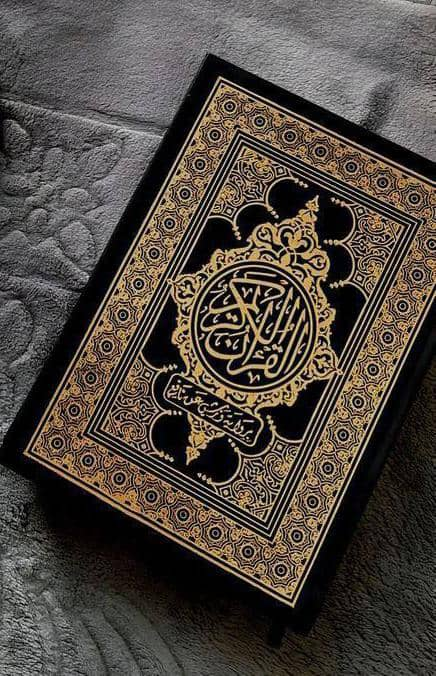

Quraan
Quraanka waxaa kusoo aroortay: * In gabar aanan loo tegin ay dhashay. * Islaan madhaleys ahayd ay dhashay. * In dayaxa uu kala dhanbalmay. * In badda ay Muuse (CS) waddo u furtay. * In cunug hadda dhashay uu hadlay. * Koox yarna ay ka guuleysatay koox badan. Si walba ayaa naloogu sheegay in Ilaahey agtiisa wax ku adag aysan jirin, dadaalka la imow kadibna weydiiso adigoo leh iimaan ah inuu kaa ajiibayo.